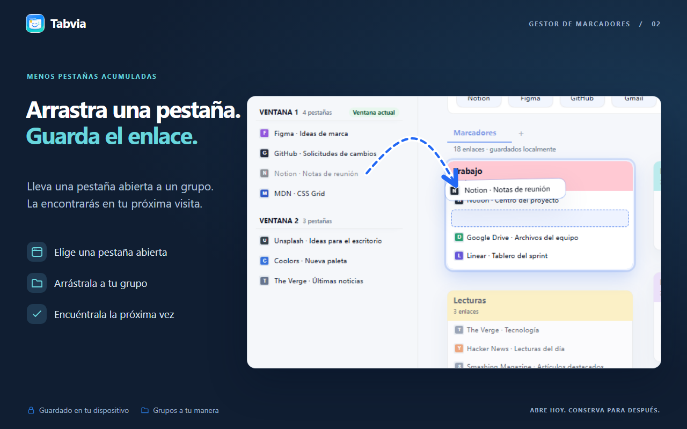
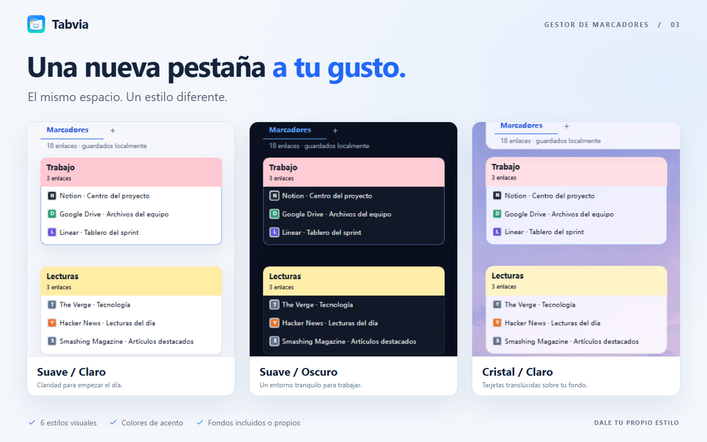
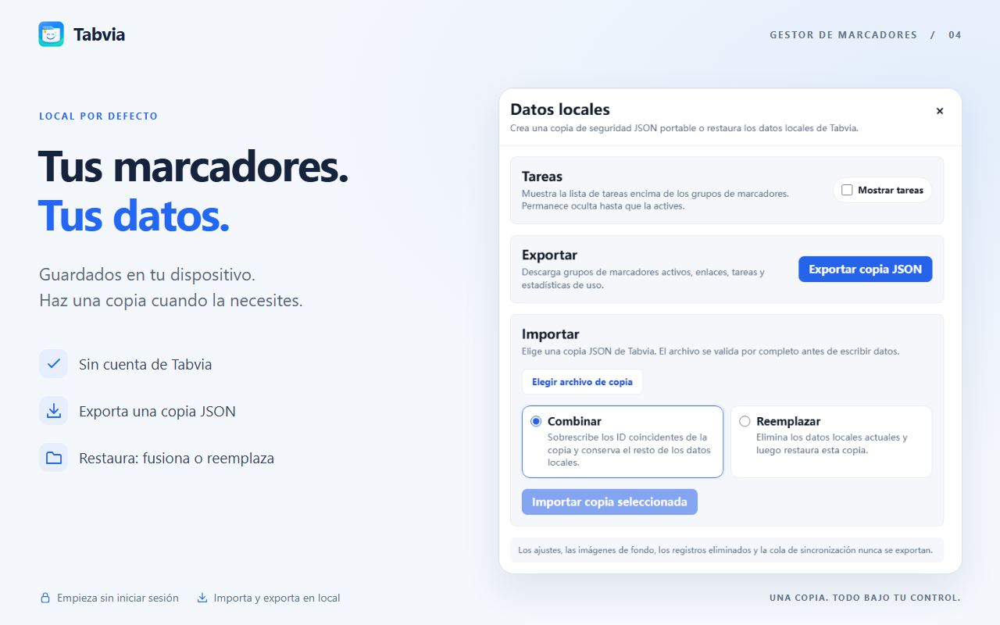
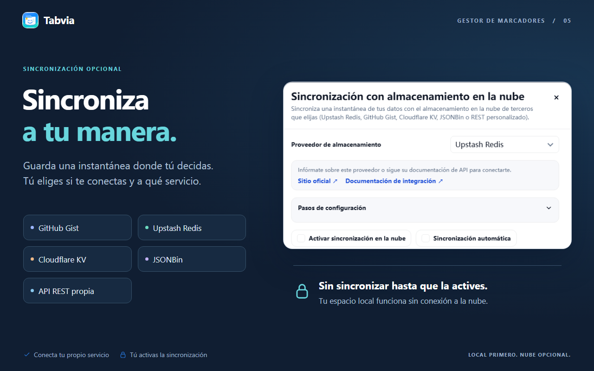

01 · Pestañas y marcadores, en orden.
01 · Pestañas y marcadores, en orden.

02 · Arrastra una pestaña. Guarda el enlace.

03 · Una nueva pestaña a tu gusto.

04 · Tus marcadores. Tus datos.

05 · Sincroniza a tu manera.